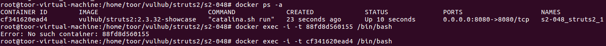
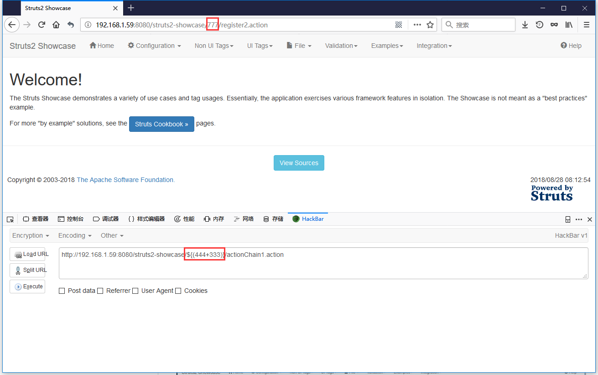

前言
Struts2又出漏洞了，上一波的045好用到不行，复现参考https://github.com/jas502n/St2-057
写这篇文章时，vulhub还没有057的漏洞环境
当Struts2的配置满足以下条件时：
- alwaysSelectFullNamespace值为true
- action元素未设置namespace属性，或使用了通配符
namespace将由用户从uri传入，并作为OGNL表达式计算，最终造成任意命令执行漏洞。
影响版本: 小于等于 Struts 2.3.34 与 Struts 2.5.16
看这个条件就知道没那么好利用
阅读本篇文章能了解到：vulhub, docker
0x01 vulhub安装
踩坑： https://github.com/vulhub/vulhub/
CentOS 7 安装各种不成功，别小看Installation简简单单4条命令，折腾了一天时间，从CentOS 到ubuntu16.04
总结一下坑点（非root下安装）
安装pip
1 | curl -s https://bootstrap.pypa.io/get-pip.py | python3 |
直接使用安装命令一直 提示 –user错误，尝试sudo、python3 后加--user、还是不行，各种尝试，不行
解决方案：
1 | wget https://bootstrap.pypa.io/get-pip.py |
安装最新版docker
1 | curl -s https://get.docker.com/ | sh |
简单一条命令安装，怎么都不行，就是安装不上，还无报错提示，-s 安静模式去掉，看到访问超时，估计又被q了
安装proxychains+shadowsocks
Ubuntu 16.04 LTS shadowsocks+proxychains 安装及设置
解决方案：
1 | proxychains wget https://get.docker.com |
行了，两条命令终于搞定了，以为万事大吉，其实踩坑才刚刚开始
启动docker服务
1 | sudo service docker start |
你懂得，不会那么顺利，继续报错，网上各种解决方法 Couldn’t connect to Docker daemon at http+unix:// 都试了一遍还是没法启动
怎么办，有点抓狂了，折腾一下午了
仔细看README.md中Notice
为防止出现权限错误，最好使用root用户执行docker和docker-compose命令
尝试sudo 再来一遍，一样无法启动
重头开始，
`sudo su`进入`root`，以`root`权限重新来过
安装compose
1 | pip install docker-compose |
安装git
1 | apt install git |
拉取项目
1 | git clone https://github.com/vulhub/vulhub.git |
0x02 复现
启动环境
struts不用编译，直接启动
1 | cd vulhub/struts2/s2-048 |
搭建s2-057漏洞环境
1 | # 查看容器id |

1 | docker exec :在运行的容器中执行命令 |
Struts 2.5.16存在s2-057漏洞，下载Struts 2.5.16
1 | mkdir /usr/local/tomcat/webapps/test |
修改配置文件
1 | locate struts-actionchaining.xml |
实际上locate命令在此docker容器中不存在，改用find查找
1 | toor@toor-virtual-machine:~$ find / -name struts-actionchaining.xml |
修改这个两个文件
1 | vim /usr/local/tomcat/webapps/struts2-showcase/WEB-INF/classes/struts-actionchaining.xml |
经查，需要先同步源索引，再安装
1 | apt-get update |
<struts></struts>整个标签替换为
1 | <struts> |
重启服务
1 | cd /usr/local/tomcat/bin/ |
0x03 验证
1 | http://192.168.1.59:8080/struts2-showcase/${(444+333)}/actionChain1.action |

当前这个版本计算器弹不出，能弹出的版本就不测了，参考链接里有
0x04 参考链接
http://www.freebuf.com/articles/system/180142.html
https://mp.weixin.qq.com/s?__biz=MzI2MTAxOTg1OQ==&mid=2650049324&idx=1&sn=e5660c5720f17f0752e39ec0e533632c&chksm=f260ea90c5176386a9346853df298cf926cd00f519bfde42c20d229444f6bd8552ca6b65449e&mpshare=1&scene=23&srcid=0713GGhQHb4IUVNVYjUVZ5Oy#rd
https://github.com/jas502n/St2-057